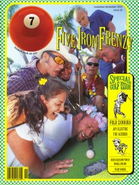

CMnexus: Contemporary Christian culture, music, and media.
|
|
7ball, Nov / Dec 1997, #15
| Cover |
|---|
|  | | Writers in this Issue |
|---|
Aderholdt, Danielle Lee
Appleman, J Henry
Bonham, Chad
Brockman, Kent
Brown, Bruce A.
Brumley, Doug
Bumgarner, Dave
Butera, Sam
Callaway, Chris
Caviness, Brad
Chimento, Frank
Down, Hans
Ebel, Jeff
Koss, "Boss" Vic
MacIntosh, Dan
McCabe, Ginny
McLellan, Paul
Mertz, Fred
Parker, Mike
Powell, Bud
Well, Chris
|
Cover Feature:Article:Media Watch:Bankshots:Photo Feature:
- "Get Back on the Bus!"
Creation Festival '97
Album Review:Collision Point:blah, blah, blah Rich Mullins by Frank Chimento
This issue of 7ball came bundled with GAS #4. |